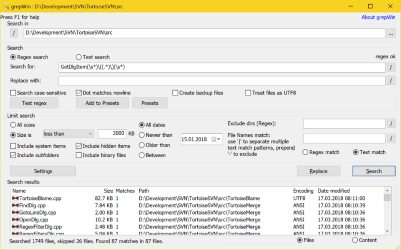

grepWin: Regular expression search and replace for Windows
Go to the download page
to download grepWin right now.
Windows version
grepWin requires Windows 10 22H2 or later.
grepWin is a simple search and replace tool which can
use regular expressions
to do its job. This allows to do much more powerful searches and replaces.
In case you're not familiar with regular expressions, we have a very
short regular expression tutorial for you.
grepWin adds an entry to the shell context menu to easily search selected folders.

Once started, grepWin allows you to customize the search or replace in many ways.

For example, you can (and maybe you should) limit the search to certain file sizes, file types, etc.
Since regular expressions can sometimes get complicated, grepWin
allows you to add your most used expressions to a presets list.

Once you've added some presets, you can easily retrieve them again from the presets dialog.

After a successful search or replace, the matching files are
listed at the bottom of the dialog. The file list behaves a lot
like the common Windows explorer. That means a double-click will
open the file, and a right-click will show you the default
shell menu for that file.

If you want to report a bug or request a feature, use
our issue tracker to
file a new issue or add a comment to an existing one. Make sure to
search all issues, not just the open issues at the time.
Command line parameters
The command line parameters are listed on a
separate page.
Visual Studio integration
You can also integrate grepWin into Visual Studio, the
wiki explains how.
Source code
grepWin is licensed under the GPL.
If you would like to make changes to grepWin, get the source code here.


{kind=link}